CLUSTER DE SMARTPHONE
Recherche Bibliographique
Alger Vivien & Hostalery Eric & Salvador Cédric &
Vacher Mathieu
Gestion des ressources

Utilisation Bluetooth/Adhoc
Sécurité multi-réseaux
- Une seule forme de sécurité adaptable
- Peu pertinent pour les mêmes raisons que la précédente
- Android et iOS = Unix-like
Architecture dynamique
- Réagir aux pertes/changements de réseaux
- Adapter la tolérance aux pannes pour les smartphones
Etat des lieux
Acteurs traditionnels :
Gridgain
- Pas de portage officiel
- Uniquement une API client
- Rien de non officiel non plus
AKKA
- Pas de support Android annoncé
- Peut néanmoins fonctionner sous Android
- Problèmes :
- Pas de gestion de batterie
- Architecture gérée automatiquement
Hyrax
- Système de MapReduce pour smartphones.
- Portage non officiel d'Hadoop sur Android.
- Utilise les smartphones pour le stockage et le traitement des données.
Hyrax
- Exécution d'appli distribuées sur smartphones => pas d'achat de serveurs
- Un mobile = un noeud de stockage et un noeud de calcul
- Traitement des données disponibles sur les mobiles
- Mais pas encore entièrement transposé sur les smartphones: nécessite un serveur pour le noeud maître
Hyrax
Remplit les conditions indispensables à la viabilité d'une plateforme cloud mobile:
- Les utilisateurs et applications peuvent accéder à n’importe quelle donnée stockée sur le cluster indépendamment de sa localisation physique
- La plateforme est capable de répartir un job entre les noeuds et de combiner les résultats pour les présenter à l’utilisateur
- Tolérance aux pannes
- Fonctionne avec n'importe quel smartphone Android
- Des progrès à faire niveau économie d'énergie, bande-passante et mémoire
Conclusion
- Domaine émergent avec la montée en puissance des mobiles
- Développement faible des principales solutions
- Besoin d'une vraie adaptation pour les smartphones